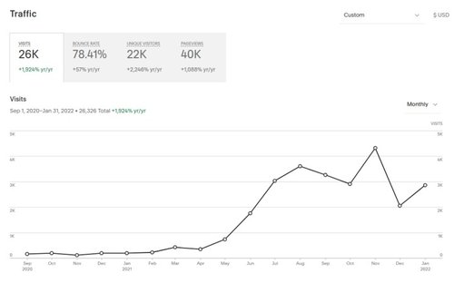

What I Learned for 1 Full Year of Blogging (Do’s and Do-Not’s)
Feb 2 '22 • Written by Yassen Shopov
📖 9 minute read
The official “birthday“ of my blog series is the 21st of September 2020, when I published my first blog post with the title “Is creativity only for creative people?“.
As you can see, everything is different nowadays - the mascot, the template, the layout. Some parts of my old texts have been edited, and I have changed a thousand little things like fonts, colour schemes, heading formats, brainstorming formats, etc.
Since this has always been (and possibly will keep being) a personal blog series where I share my knowledge and insights on topics of interest to me, it was not too difficult to remain true to my “brand”. After all, the brand followed my own image and was a reflection of my mindset at the time. This could explain why I started off writing about more vague topics at the beginning, like inspiration and discipline, and I have since niched down to talk more in detail about my experience as a content creator and freelancer.
It has now been officially more than 1 year since I have been keeping up with writing on this blog. I didn’t do this post earlier since I wanted to make up for some inconsistencies on my part in terms of timing. At the very beginning, I wrote a few posts, one per week, and then I stopped writing when my semester in university got more intense. I later resumed with the blog at the start of 2021 and had been steadily publishing 1 article per week with a few exceptions, until I made another 1-month break in December 2021. Now, with 2022 having started already, I have dedicated myself to publishing 2 blog posts a week, of (hopefully) higher quality and on topics that I have expertise upon. So far, my stats look something like this:
2020: 6 blog posts in total
2021: 43 blog posts in total
2022: 7 blog posts so far (as of early February 2022)
Statistic wise, I managed to utilise my blog and market it on social media (Reddit, Instagram, Pinterest) to gain traction of about 3,000 visits/month, a stat that took a while to build up.
Some of my most popular blog posts are related to studying techniques for university students, productivity apps, and specific use-cases of the all-in-one workspace application - Notion. The magic with my Notion articles probably would boil down to the category of people using the app in the first place. Most of them are already interested in the topics I write about, so after inviting them to my website with my Notion articles, they would then stumble upon other blog posts that they fancy.
My experience with blogging for the past year can’t be summarised in just one paragraph, but if I learned anything essential (as a content creator as a whole), it would be that…
Growth is not linear
What may seem like an obvious statement is something that usually comes as a surprising reminder to most of us.
You can see in the picture that the rate at which my traffic grew increased a few months back, but that wasn’t a step change from the previous months. And thankfully so, since otherwise, I wouldn’t have yet got to 2K visits/month. What is more, the growth didn’t continue disproportionately into the sky, and I hit my maximum visits/month over November 2021, only to half them the next month (mainly because of the reduction in content).
All that explaining is to serve as a warning - don’t expect your growth to be linear. If you are consistent and hard-working, some growth is to be expected, but the ups and downs can be a product of external factors just as much.
Now that we got this disclaimer out of the way, let’s get into the do’s and do-not’s that I have accumulated over this year.
Do: Experiment in a variety of topics
Now, this may clash a bit with the next piece of advice I am about to give you, but there is a chronological order in which topic niching happens. In my experience, I wouldn’t have found the few good topics that I love talking about if I hadn’t first written on a bunch of them, following my hunch.
Especially at the beginning of your blogging journey, experimentation is crucial and easy. Since there are fewer dedicated readers of your blog, you can allow yourself to write about a variety of niches, until you find ones that stick. It could also be helpful if you allow your readers to influence your blog as well - they could help you brainstorm ideas, give you feedback, comment on your work and expertise.
Do: Niche down
Getting to some more subsequent thing I realised - I would attract more readers once I sit down with my thoughts and choose a handful of related topics, of which I can achieve some level of domain expertise. In my case, I had been using the app Notion for 2 years before I started this blog, and I had already created quite a few educational templates that my friends have found helpful.
All in all, I knew that this is a topic that I had some expertise upon, and once I found out that many people are also curious about the same, it seemed like a good moment to niche down and keep on experimenting - just on a smaller scale.
Don’t: Keep the blog to yourself
You would be surprised how many people you know have content for days for their blog series, but it’s just hidden. And I don’t mean to include only blog writers - this could include people with everyday journals, scrapbooks, Pinterest mood boards, reports on work they specialise in, short fiction stories, etc.
If my experience as a content creator has taught me anything, it’s that, good or bad, your content will be appreciated by at least 1 person somewhere on the planet. The internet gives us the unique opportunity to interact amongst demographics, countries, classes, social groups. This means that your content, through the magic of search engines, will somehow find its way to somebody’s screen, and may become their favourite piece.
And all these positive benefits can be leveraged pretty easily - by just not keeping your content to yourself and publishing it routinely online.
Don’t: Stay stuck with old habits
This relates to the upgrade I made from 1 post per week to 2 of them. It also applies to any sort of changes in routine you apply that serves to actualise your work habits.
Since the results of our effort are usually byproducts of our routines and systems, it doesn’t make sense that the same system would produce different results over time, even if it is a good system. For me, 1 blog post per week was just not generating enough website traffic for it to be worth the effort, so I had to make an increase in both quality and quantity. It also didn’t help when the topics were self-contained - I needed to start linking my articles together in a coherent manner, so people would reach the end of one article and would be keen to continue reading another article on a similar enough topic.
All in all, do not let your set-in-stone habits limit you and allow some flexibility to your writing and marketing process.
[32:10]
“By Sophia Lee”